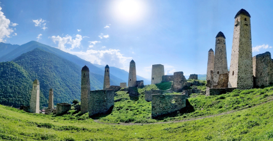

Гид по Ингушетии
Горная Ингушетия относительно недавно стала доступна массовому посетителю, несмотря на то, что в советское время через регион проходили всесоюзные туристические маршруты, а в санатории Армхи, основанном в 1920-е годы, лечились и отдыхали сотни тысяч человек.
С 2013-го года регион переживает второе рождение, у лечебного оздоровительного комплекса была построена канатная дорога, горнолыжная трасса и высокогорный бассейн под открытым небом с собственной гостиницей, а в окрестностях туристов ждут экскурсии по Стране Башен горная Ингушетия знаменита хорошо сохранившимися башенными поселками с боевыми башнями высотой до 30 метров и древними храмами X века, занесенными в список памятников федерального значения. Мы постепенно будем рассказывать об этом уникальном месте, открывая его для массового читателя
Горная Ингушетия знаменита хорошо сохранившимися башенными посёлками
с боевыми башнями высотой до 30 метров и древними храмами X века
Особенности местности
 Горная Ингушетия относительно недавно стала доступна массовому посетителю, несмотря на то, что в советское время через регион проходили всесоюзные туристические маршруты, а в санатории Армхи, основанном в 1920-е годы, лечились отдыхали сотни тысяч человек. С 2013-го года регион переживает второе рождение, у лечебного была построена канатная дорога, горнолыжная трасса и высокогорный бассейн под открытым небом с собственной гостиницей, а в окрестностях туристов ждут экскурсии по Стране Башен горная Ингушетия знаменита хорошо сохранившимися башенными поселками с боевыми башнями высотой до 30 метров и древними храмами X века, занесенными в список.
Горная Ингушетия относительно недавно стала доступна массовому посетителю, несмотря на то, что в советское время через регион проходили всесоюзные туристические маршруты, а в санатории Армхи, основанном в 1920-е годы, лечились и отдыхали сотни тысяч человек.
Истории гидов
Горная Ингушетия относительно недавно стала доступна массовому посетителю, несмотря на то, что в советское время через регион проходили всесоюзные туристические маршруты, а в санатории Армхи, основанном в 1920-е годы, лечились и отдыхали сотни тысяч человек. Горная Ингушетия относительно недавно стала доступна массовому посетителю, несмотря на то, что в советское время через регион проходили всесоюзные туристические маршруты, а в санатории Армхи, основанном в 1920-е годы, лечились и отдыхал.
Горная Ингушетия относительно недавно стала доступна массовому посетителю, несмотря на то, что в советское время через регион
проходили всесоюзные туристические маршруты, а в санатории Армхи, основанном в 1920-е годы.
Лечились и отдыхали сотни тысяч человек. Горная Ингушетия относительно недавно стала доступна массовому посетителю, несмотря на то,
что в советское время через регион проходили всесоюзные туристические маршруты.
Исторические места Ингушетии
Горная Ингушетия относительно недавно стала доступна массовому посетителю, несмотря на то, что в советское время через регион проходили всесоюзные туристические маршруты, а в санатории Армхи, основанном в 1920-е годы, лечились отдыхали сотни тысяч человек. С 2013-го года регион переживает второе рождение, у лечебного была построена канатная дорога, горнолыжная трасса и высокогорный бассейн под открытым небом с собственной гостиницей.
Преимущества путешествия
- Мемориал памяти и славы в Назрани
- Башня Согласия в Магасе
- Мавзолей Борга-Каш
- Горный курорт «Армхи»
- Башенный комплекс Фуртоуг и Фуртоугский водопад
Места для посещения
- Мемориал памяти и славы в Назрани
- Башня Согласия в Магасе
- Мавзолей Борга-Каш
- Горный курорт «Армхи»
- Башенный комплекс Фуртоуг и Фуртоугский водопад
Как оформить экскурсию
несмотря на то, что в советское время через регион проходили всесоюзные.
несмотря на то, что в советское время через регион проходили всесоюзные.
несмотря на то, что в советское время через регион проходили всесоюзные.